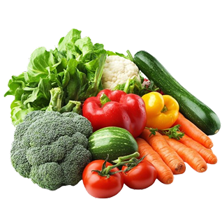
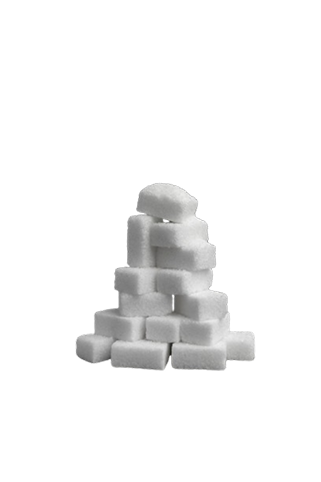
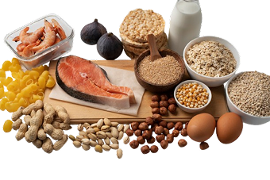
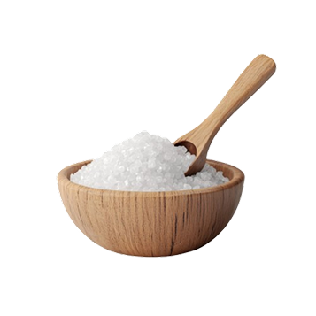

Apesar das variações individuais e culturais, os princípios de uma dieta equilibrada são os mesmos para todos.
Sugestões de uma dieta saudável
- Frutas, verduras, legumes, leguminosas, nozes e cereais integrais devem fazer parte da base da alimentação.
- A recomendação é consumir pelo menos 400 g por dia de frutas e vegetais — o que corresponde a cerca de cinco porções.

- Os açúcares adicionados aos alimentos e bebidas devem corresponder a menos de 10% das calorias diárias.

- As gorduras devem compor menos de 30% da energia total diária, dando preferência às versões insaturadas.

- O consumo de sal deve ser inferior a 5 g por dia, sempre dando preferência ao sal iodado.
